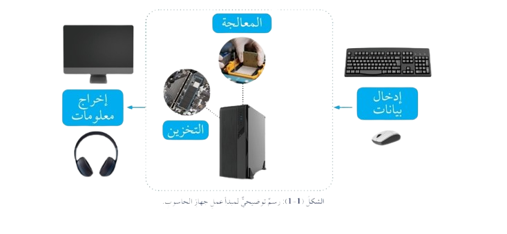

جهاز الحاسوب هو جهاز إلكتروني يستقبل البيانات، يعالجها، يخزنها، ويخرجها كمعلومات وفقًا لأوامر برمجية، ويتميز بأنواع متعددة تخدم مجالات الحياة المختلفة مثل التعليم، الصحة، والنقل.

يعمل الحاسوب عبر أربع مراحل: الإدخال (Input) لاستقبال البيانات، المعالجة (Processing) باستخدام وحدة المعالجة المركزية، التخزين (Storage) لحفظ المعلومات، والإخراج (Output) لعرض النتائج عبر الشاشة أو الطابعة.
البيانات هي حقائق أولية غير معالجة مثل الأرقام أو الرموز، بينما المعلومات هي البيانات بعد تنظيمها ومعالجتها لتصبح ذات معنى، مثل تقارير أو رسوم بيانية.
الحاسوب المكتبي (Desktop): للاستخدام الثابت، يتميز بأداء عالٍ.
الحاسوب المحمول (Laptop): محمول وخفيف الوزن.
الحاسوب اللوحي (Tablet): يعتمد على شاشة تعمل باللمس.
الهاتف الذكي (Smartphone): للاتصال والترفيه.
يُستخدم في التعليم (التعلم عن بُعد)، الرعاية الصحية (تحليل البيانات الطبية)، التجارة (إدارة المخزون)، النقل (تتبع الشحنات بـ GPS)، والرياضة (تحليل الأداء).
جهاز الحاسوب جهاز إلكتروني يعالج البيانات عبر مراحل الإدخال، المعالجة، التخزين، والإخراج. يأتي بأنواع (مكتبي، محمول، لوحي، ذكي) ويُستخدم في التعليم، الصحة، التجارة، النقل، والرياضة.